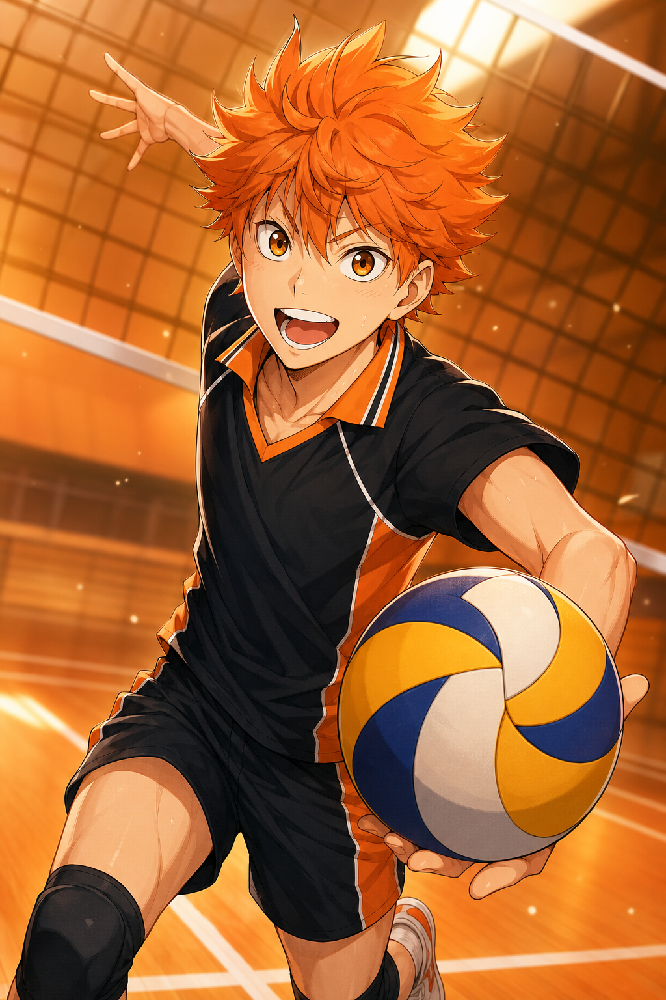
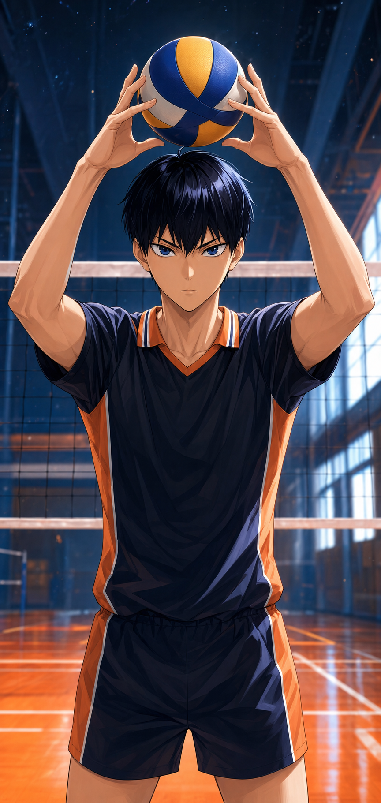

故事的核心是日向翔阳与影山飞雄这对“怪人快攻”组合：一个拥有惊人运动能力，一个具备顶级传球视野。两人从互相较劲，到彼此磨合，再与队友一起让沉寂的乌野重新成为赛场上无法忽视的存在。
作品真正动人的地方，是它没有把对手写成单纯的障碍。青叶城西、音驹、白鸟泽、稻荷崎等队伍都有自己的逻辑、信念和遗憾。每一次扣球、拦网和救球，都像是在回答“我为什么还要继续打下去”。
《排球少年!!》围绕宫城县乌野高中男子排球部展开。日向翔阳被电视中“小巨人”的身影点燃，虽然身高不占优势，却凭借弹跳、速度和不服输的执念冲进球场。
故事的核心是日向翔阳与影山飞雄这对“怪人快攻”组合：一个拥有惊人运动能力，一个具备顶级传球视野。两人从互相较劲，到彼此磨合，再与队友一起让沉寂的乌野重新成为赛场上无法忽视的存在。
作品真正动人的地方，是它没有把对手写成单纯的障碍。青叶城西、音驹、白鸟泽、稻荷崎等队伍都有自己的逻辑、信念和遗憾。每一次扣球、拦网和救球，都像是在回答“我为什么还要继续打下去”。
强队之间的差异不是数值高低，而是打法、性格和信念的碰撞。它们让比赛像棋局，也像一次次青春宣言。
曾经的强豪，重新振翅的“不会飞的乌鸦”。速度、韧性和不断试错，是这支队伍的底色。
主角队以二传手及川彻为核心，成熟、稳定、善于读局，是乌野成长路上的重要高墙。
宿敌“连接”是他们的武器，防守坚韧，节奏细密，与乌野有着命中注定般的垃圾场决战。
老对手绝对王牌牛岛若利领衔，力量和高度压迫感极强，是县内王者级别的存在。
王者日向翔阳和影山飞雄从互相较劲开始，到成为乌野最锋利的进攻组合。一个负责突破想象，一个负责把球精准托到未来。

日向翔阳被“小巨人”的背影点燃，即使身高不占优势，也用惊人的弹跳、冲刺速度和永不退缩的斗志冲进球场。他的存在让乌野的进攻多了一种近乎不可思议的节奏。
他不是一开始就完美的王牌，而是在一次次接球、助跑和失败里学会看见球场。越是不被看好，越能把比赛重新点燃。

影山飞雄拥有天才级的观察力和传球精度，他能把球送到攻手最需要的位置，也因此成为乌野进攻节奏的发动机。冷静、强势、执着，是他最锋利的一面。
真正的成长来自学会信任队友。影山从“命令别人进攻”的二传，慢慢变成能把每个人能力托举出来的指挥者。
每个人都有短板，也都有不可替代的位置。正因为不完美，团队才变得真实。
小个子副攻手，速度和弹跳惊人，用行动证明高度不是球场的全部。
天才二传手，精准、强势，也在团队中学会真正的“托付”。
理性派副攻手，从旁观到投入，他的拦网是成长线最漂亮的瞬间之一。
队长与防守支柱，稳定到几乎让人忘记他承担了多少压力。
温柔可靠的三年级二传手，在关键时刻总能把队伍重新拉回节奏。
自由人，乌野的守护神。只要他还在，球就没有真正落地。
《排球少年!!》的热血不是简单喊口号，而是把每一次训练、失败和微小调整，都拍成可以被看见的进步。
传球路线、攻防选择和站位变化都能被观众理解，紧张感来自真正的战术推进。
每支队伍都有自己的青春。输赢之外，观众也会记住他们如何走到这里。
角色的突破来自反复练习、彼此理解和临场选择，所以每个高光时刻都站得住。
“再高的墙，只要球还没有落地，就还有下一次起跳。”
如果是第一次看，按动画播出主线顺序走最顺。总集篇可按需要补，核心体验主要来自 TV 动画与后续剧场版。
乌野集结，日向和影山从冲突到组成怪人快攻。
东京集训与春高预选，队伍开始真正升级。
对阵白鸟泽，十集高密度比赛，压迫感拉满。
全国大赛展开，乌野迎来更强的对手和更大的舞台。